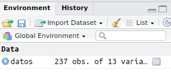

Chapter 5 Importar datos
5.1 Desde archivo CSV
Vamos a usar la siguiente base de datos.
Tras descargar el archivo de arriba, lo moveremos a nuestro directorio de trabajo ‘R workshop’. Una vez ahí, podemos usar alguna de las siguientes funciones para leer el archivo:
read_csv()- comma separated valuesread_csv2()- semicolon separated valuesread_delim( , delim = "|")- values separated by an arbitrary delimiter
# Cargamos librerias
if (!require('tidyverse')) install.packages('tidyverse'); library('tidyverse')
# Establecemos directorio de trabajo
setwd("~/R workshop")#Importar los datos
datos = read_csv("Data/Importar_datos/data_importar_datos.csv")## Parsed with column specification:
## cols(
## ID = col_integer(),
## wais_voc = col_integer(),
## boston = col_integer(),
## moral_02i = col_integer(),
## moral_20p = col_integer(),
## minisea_caras = col_integer(),
## eqscore = col_integer(),
## sex = col_integer(),
## age = col_integer(),
## wais_mp = col_integer(),
## eyes = col_integer(),
## sass_score = col_integer(),
## ifs_score = col_integer()
## )#Muestra las primeras 10 observaciones
datos## # A tibble: 237 x 13
## ID wais_voc boston moral_02i moral_20p minisea_caras eqscore sex
## <int> <int> <int> <int> <int> <int> <int> <int>
## 1 1 34 28 1 1 29 63 0
## 2 2 13 23 NA 0 23 55 0
## 3 3 20 16 1 1 26 27 0
## 4 4 24 23 1 1 21 33 0
## 5 5 20 24 1 1 18 35 1
## 6 6 2 3 0 0 23 38 NA
## 7 7 13 15 1 NA 19 38 0
## 8 8 27 18 1 0 15 42 1
## 9 9 37 28 1 0 23 36 0
## 10 10 27 24 0 0 20 51 1
## # ... with 227 more rows, and 5 more variables: age <int>, wais_mp <int>,
## # eyes <int>, sass_score <int>, ifs_score <int>En el panel ‘Environment’ veremos que aparece datos:

Haciendo click en datos abrimos una pestaña donde podemos ver el contenido de ese data frame. También podemos visualizarlo usando el codigo View(datos)
5.2 Desde archivo XLS
Vamos a usar la siguiente base de datos.
# Cargamos librerias
if (!require('readxl')) install.packages('readxl'); library('readxl')
# Establecemos directorio de trabajo
setwd("~/R workshop")#Importar los datos
datos = read_excel("Data/Importar_datos/data_importar_datos.xls")
#Muestra las primeras 10 observaciones
datos## # A tibble: 237 x 13
## name wais_voc boston moral_02i moral_20p minisea_caras eqscore sex
## <dbl> <dbl> <dbl> <dbl> <dbl> <dbl> <dbl> <dbl>
## 1 1 34 28 1 1 29 63 0
## 2 2 13 23 NA 0 23 55 0
## 3 3 20 16 1 1 26 27 0
## 4 4 24 23 1 1 21 33 0
## 5 5 20 24 1 1 18 35 1
## 6 6 2 3 0 0 23 38 NA
## 7 7 13 15 1 NA 19 38 0
## 8 8 27 18 1 0 15 42 1
## 9 9 37 28 1 0 23 36 0
## 10 10 27 24 0 0 20 51 1
## # ... with 227 more rows, and 5 more variables: age <dbl>, wais_mp <dbl>,
## # eyes <dbl>, sass_score <dbl>, ifs_score <dbl>5.3 Desde archivo SAV
Vamos a usar la siguiente base de datos.
# Cargamos librerias
if (!require('haven')) install.packages('haven'); library('haven')
# Establecemos directorio de trabajo
setwd("~/R workshop")#Importar los datos
datos = read_sav("Data/Importar_datos/data_importar_datos.sav")
#Muestra las primeras 10 observaciones
datos## # A tibble: 237 x 13
## ID wais_voc boston moral_02i moral_20p minisea_caras eqscore sex
## <dbl> <dbl> <dbl> <dbl> <dbl> <dbl> <dbl> <dbl>
## 1 1 34 28 1 1 29 63 0
## 2 2 13 23 NaN 0 23 55 0
## 3 3 20 16 1 1 26 27 0
## 4 4 24 23 1 1 21 33 0
## 5 5 20 24 1 1 18 35 1
## 6 6 2 3 0 0 23 38 NaN
## 7 7 13 15 1 NaN 19 38 0
## 8 8 27 18 1 0 15 42 1
## 9 9 37 28 1 0 23 36 0
## 10 10 27 24 0 0 20 51 1
## # ... with 227 more rows, and 5 more variables: age <dbl>, wais_mp <dbl>,
## # eyes <dbl>, sass_score <dbl>, ifs_score <dbl>5.4 Importar todos los archivos de una carpeta
Vamos a usar los siguientes archivos. Tendrás que descomprimirlos en una carpeta antes de usarlos.
if (!require('tidyverse')) install.packages('tidyverse'); library('tidyverse')
# We list all files in the desired folder
Path_Folder = "Data/Importar_datos/CSVs/"
file.list <- paste0(Path_Folder, list.files(Path_Folder)); file.list## [1] "Data/Importar_datos/CSVs/01.csv" "Data/Importar_datos/CSVs/02.csv"
## [3] "Data/Importar_datos/CSVs/03.csv" "Data/Importar_datos/CSVs/CSVs.zip"# Read and bind all of them
# We can use the function read_csv or any other
df = lapply(file.list, read_csv) %>%
bind_rows(.id = "ID")## Parsed with column specification:
## cols(
## Sex = col_character(),
## Priming = col_character(),
## trialN = col_integer(),
## Block = col_character(),
## Adjective = col_character(),
## Valence = col_character(),
## Answer = col_character(),
## Arrow = col_character(),
## rT = col_integer()
## )
## Parsed with column specification:
## cols(
## Sex = col_character(),
## Priming = col_character(),
## trialN = col_integer(),
## Block = col_character(),
## Adjective = col_character(),
## Valence = col_character(),
## Answer = col_character(),
## Arrow = col_character(),
## rT = col_integer()
## )
## Parsed with column specification:
## cols(
## Sex = col_character(),
## Priming = col_character(),
## trialN = col_integer(),
## Block = col_character(),
## Adjective = col_character(),
## Valence = col_character(),
## Answer = col_character(),
## Arrow = col_character(),
## rT = col_integer()
## )## Multiple files in zip: reading '03.csv'## Parsed with column specification:
## cols(
## Sex = col_character(),
## Priming = col_character(),
## trialN = col_integer(),
## Block = col_character(),
## Adjective = col_character(),
## Valence = col_character(),
## Answer = col_character(),
## Arrow = col_character(),
## rT = col_integer()
## )df## # A tibble: 1,600 x 10
## ID Sex Priming trialN Block Adjective Valence Answer Arrow
## <chr> <chr> <chr> <int> <chr> <chr> <chr> <chr> <chr>
## 1 1 male Collective 1 we ofensivo negative yes left
## 2 1 male Collective 2 we resentido negative no right
## 3 1 male Collective 3 we ego�sta negative yes left
## 4 1 male Collective 4 we indiscreto negative yes left
## 5 1 male Collective 5 we sumiso negative yes left
## 6 1 male Collective 6 we agradable positive yes left
## 7 1 male Collective 7 we clasista negative yes left
## 8 1 male Collective 8 we altruista positive yes left
## 9 1 male Collective 9 we ansioso negative yes left
## 10 1 male Collective 10 we presumido negative yes left
## # ... with 1,590 more rows, and 1 more variables: rT <int>5.5 Importar archivos con RStudio
Vamos a usar la siguiente base de datos.
A partir de la version 1.0 de RStudio podemos importar archivos de datos usando la interfaz gráfica - Panel Environment > Import Dataset, arriba a la derecha. En cualquier caso, para que lo que hacemos sea reproducible, es recomendable trabajar con código.